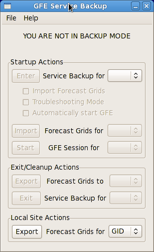
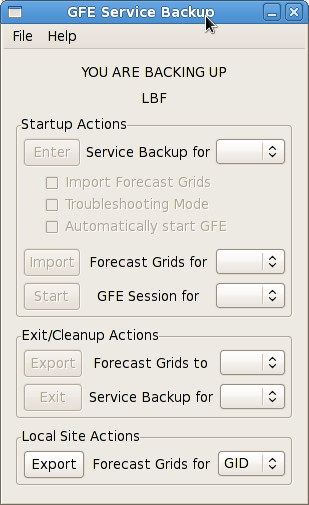
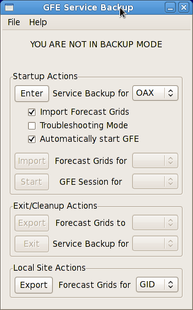
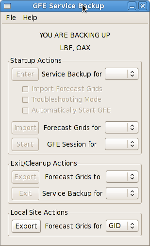
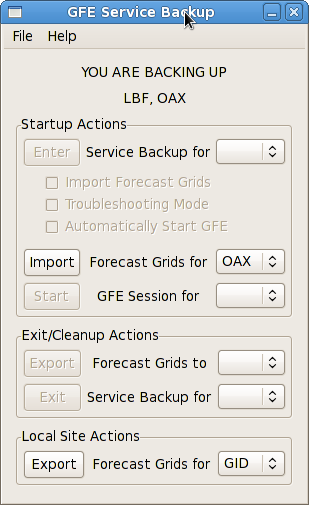
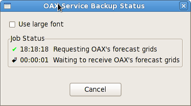
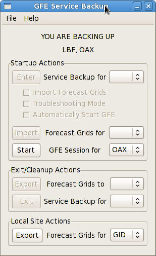
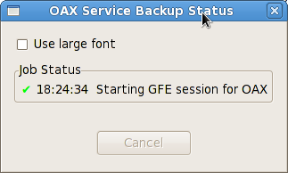

GFE Service Backup Startup Actions
- Verify that the banner at the top of the Service Backup
Dialog reads "YOU ARE NOT IN BACKUP MODE" or does not include the failed site
you wish to back up under "YOU ARE BACKING UP".
If the failed site is listed you may want to
exit and re-enter service backup to ensure you are using the failed site's latest configuration.


- Select the failed site from the drop down next to the "Enter Service Backup" button.
The sites you commonly back up will appear at the top of the list.
- Check the boxes next to any desired start up options:
- Import Forecast Grids: Automatically import the failed site's digital forecast grids.
If you are entering service backup to issue an urgent warning product you may wish to skip
this step. You can import the grids after after entering service backup using the
"Import Forecast Grids" button.
- Troubleshooting Mode: You should check this box if you are activating the site
for testing and intending to enter service backup. This will disable ISC and
VTEC Active Table sharing since you are not acting as the failed site.
- Automatically Start GFE: Checking this box will automatically start a GFE session
for the failed site as you enter service backup. You can also do this after entering
service backup using the
"Start GFE Session" button.

- After you have selected the desired start up options, click the "Enter Service Backup"
button.
- A
Service Backup Status Dialog
will open showing the status of each step required to enter
service backup for the failed site.
- Verify that the failed site is listed in the banner at the top of the Service Backup Dialog under
"YOU ARE CURRENTLY BACKING UP". If it isn't, you must first
enter service backup for the failed site.

- Select the failed site from the drop down next to the "Import Forecast Grids" button.
Only sites you are currently backing up will appear in the list.

-
Click the "Import Forecast Grids" button to start the import.
- A
Service Backup Status Dialog
will open showing the status of each step required to import
the failed site's forecast grids.

- Verify that the failed site is listed in the banner at the top of the Service Backup Dialog under
"YOU ARE CURRENTLY BACKING UP". If it isn't, you must first
enter service backup for the failed site.
- Select the failed site from the drop down next to the "Start GFE Session" button.
Only sites you are currently backing up will appear in the list.

-
Click the "Start GFE Session" button to start the import.
- A
Service Backup Status Dialog
will open showing the status of each step required to start a GFE session for the failed site.
